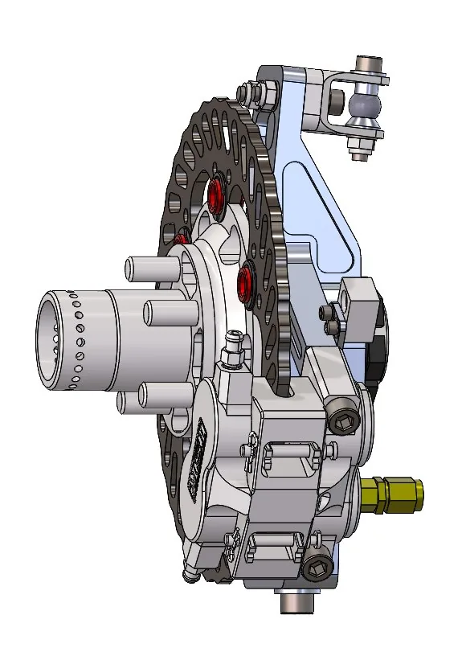
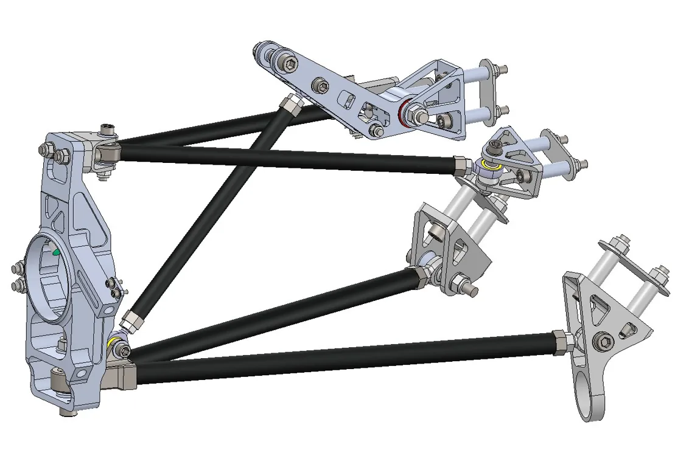
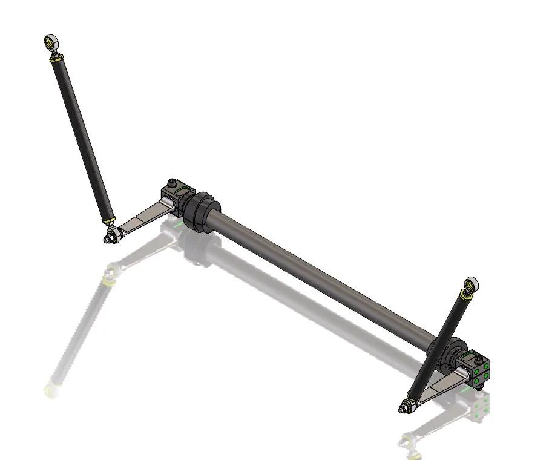
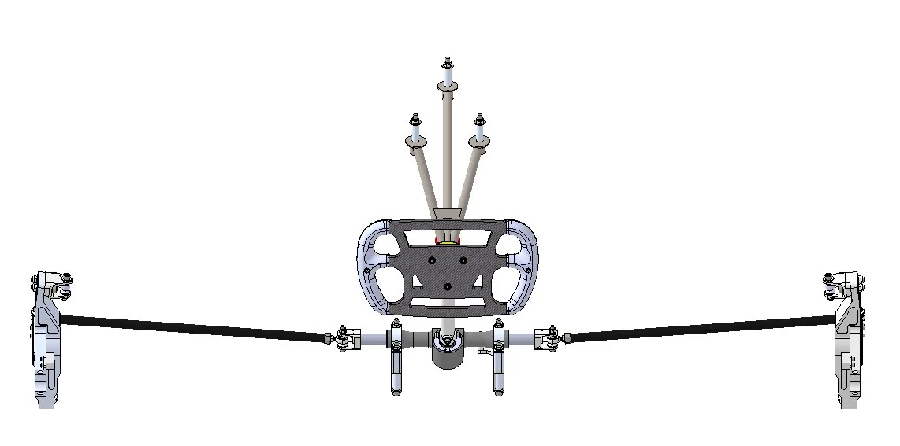

Optimisation of Suspension and Steering System for FSAE
CDE4301 Interim Report — Steering System Focus
Aroza Anson | NUS Formula SAE
Table of Contents
1. Introduction, Problem Statement and Objectives
1.1 Formula SAE Competition

Formula SAE Michigan is an intervarsity competition where teams design, build and race a formula-style car. Teams are assessed based on static and dynamic events.
Static events
- Design briefing
- Cost Report
- Business Presentation
Dynamic events
- Acceleration (75 m straight)
- Skidpad (figure of 8)
- Autocross (800 m sprint)
- Endurance (22 km)
- Efficiency (energy utilisation during endurance)
Static event photographs


Dynamic event photographs


Event photographs are illustrative. Captions identify the source team and distinguish confirmed event photographs from general on-track images.
For the R27 season, the team has set the following goal: Achieve a top 10 placement overall by maintaining our scores for static events and placing top 10 in dynamic events through the following targets.
1.2 FSAE Team Breakdown
Departments:

The suspension department aims to create a system that keeps the tyres at an optimal angle to the ground to maximise all driving forces on the car. Below is an overview of the R27 suspension system.


Below is a breakdown of the various suspension components.
1. Rims and Tyres

2. Hubs and Uprights


3. Control Arms and Rods


4. Springs and Dampers


5. Anti Roll Bars


6. Steering

7. Brakes

2. Steering System Background and Design Specifications
2.1 Steering System Fundamentals
Content to be added.
2.2 Design Requirements and Performance Targets
Content to be added.
2.3 Packaging and Regulatory Constraints
Content to be added.
3. Steering System Concept Development and Selection
3.1 Design Methodology
Content to be added.
3.2 Steering Rack and Anti-Roll Bar Placement
Content to be added.
3.3 Steering Rack Selection
Content to be added.
3.4 Steering Brace Material Selection
Content to be added.
4. Detailed Steering Design, Optimisation and Results
4.1 Steering Geometry Optimisation
Content to be added.
4.2 Steering Rack Selection and Steering Effort
Content to be added.
4.3 Steering Rack Mount Design
Content to be added.
4.4 Steering Brace Optimisation
Content to be added.
4.5 Overall Design Verification and Weight Reduction
Content to be added.
5. Discussion, Challenges and Limitations
5.1 Engineering Trade-offs
Content to be added.
5.2 Challenges Encountered
Content to be added.
5.3 Limitations of Current Work
Content to be added.
6. Future Work and Validation Plan
6.1 Manufacturing and Assembly
Content to be added.
6.2 Static and Dynamic Testing
Content to be added.
6.3 Project Milestones
Content to be added.
7. Conclusion
Content to be added.
References
References to be added.
Appendices
Supporting calculations, figures and data to be added.